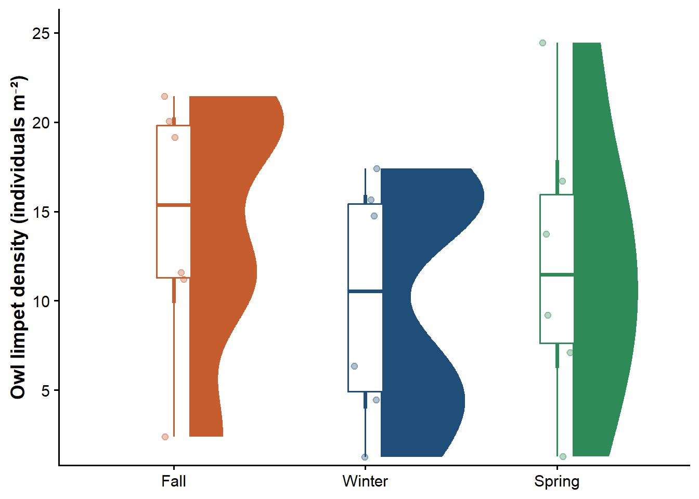
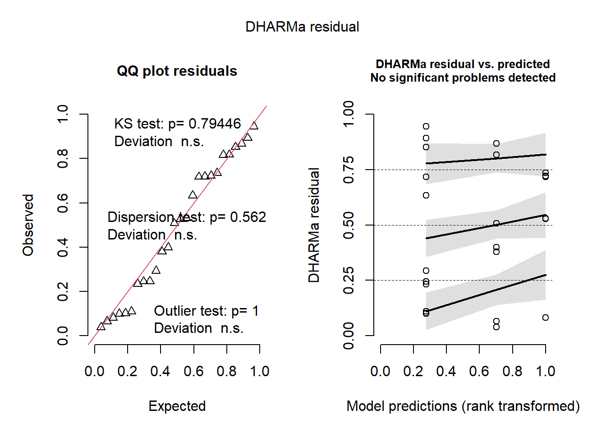
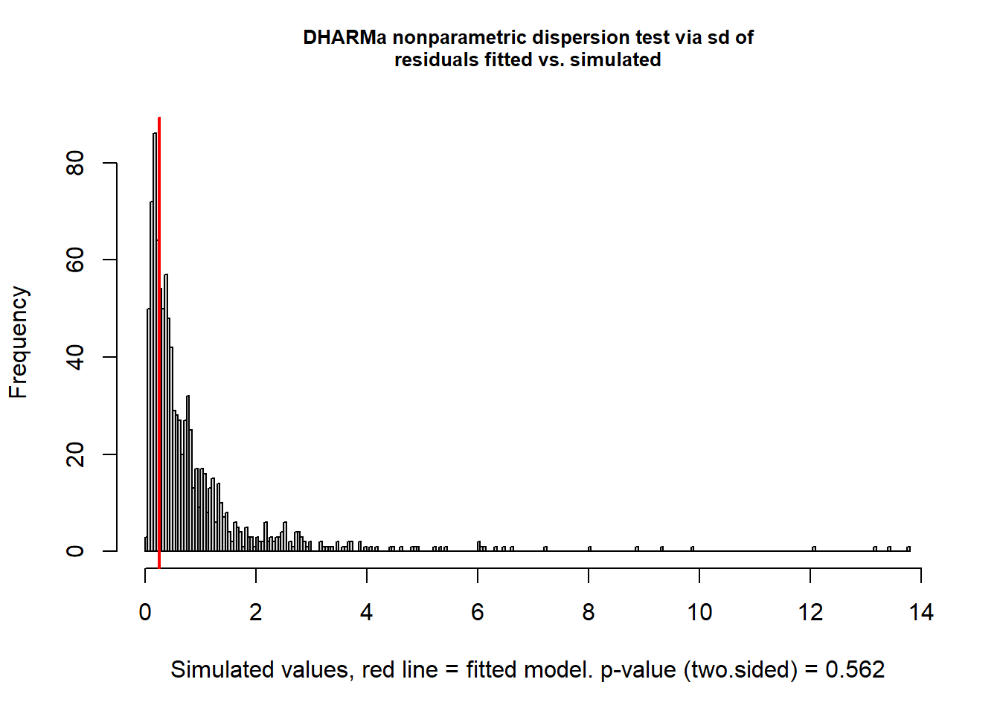
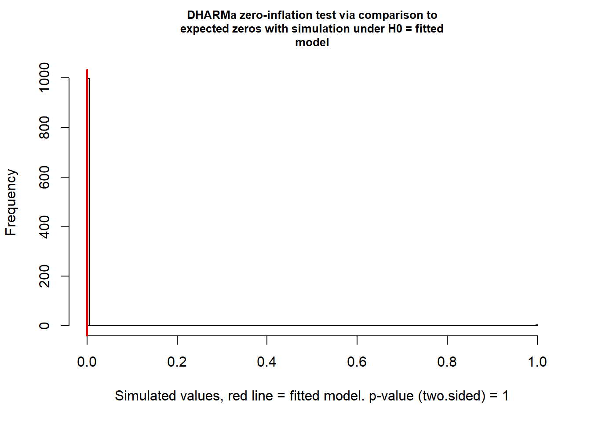
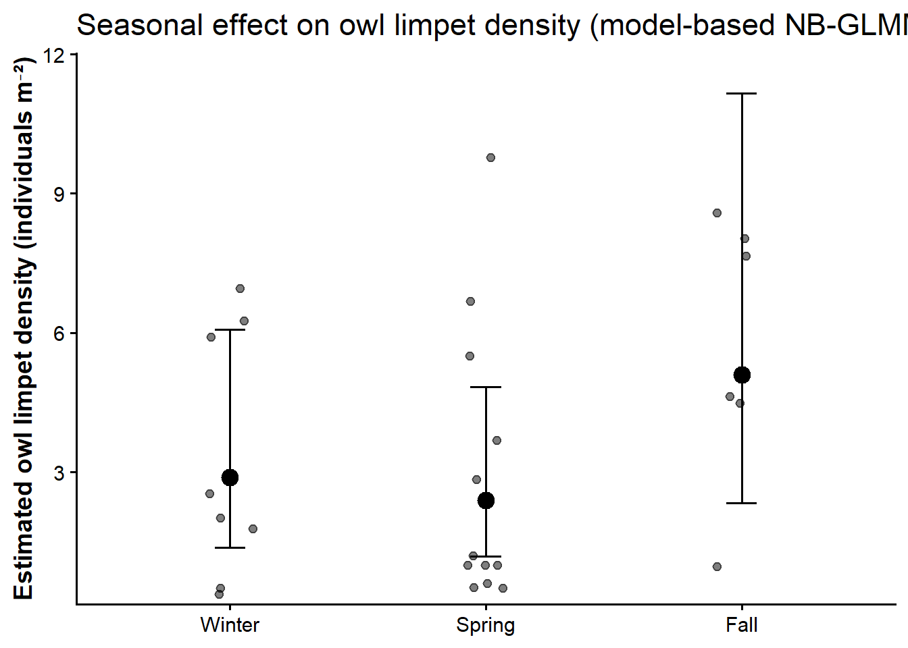
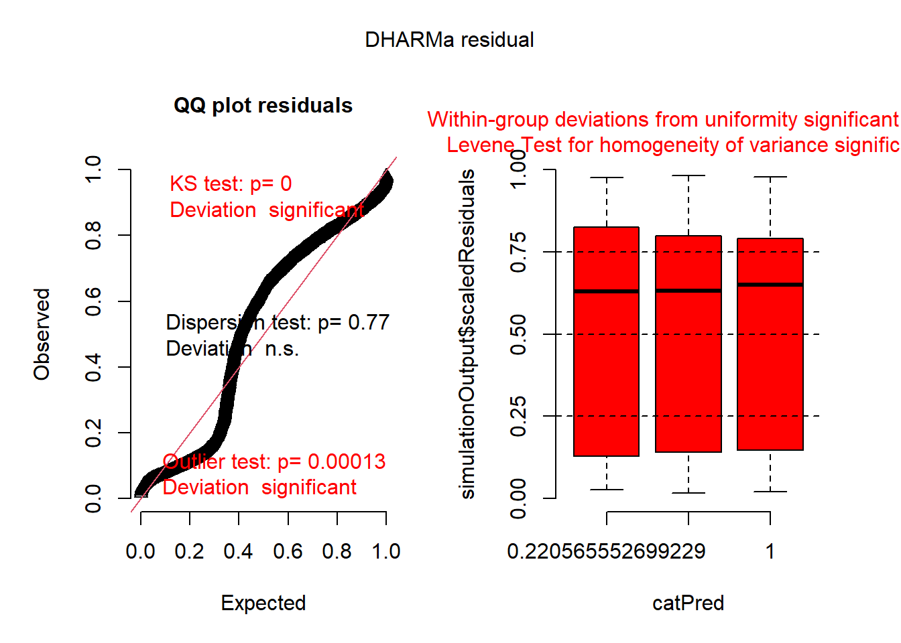
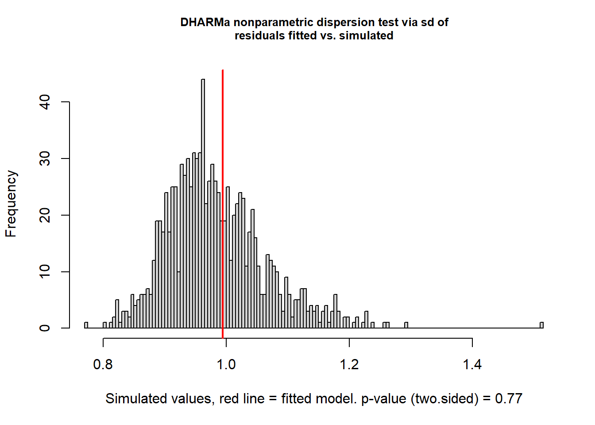
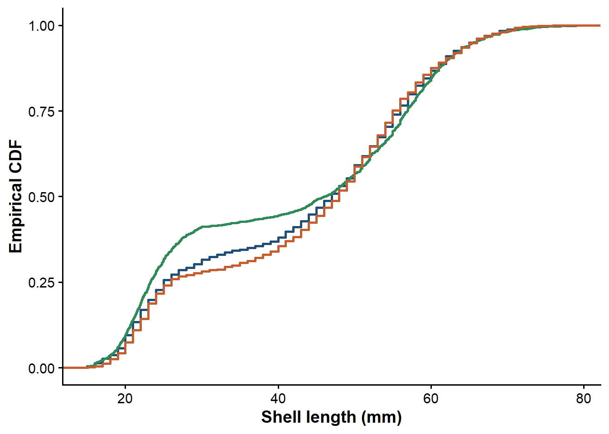
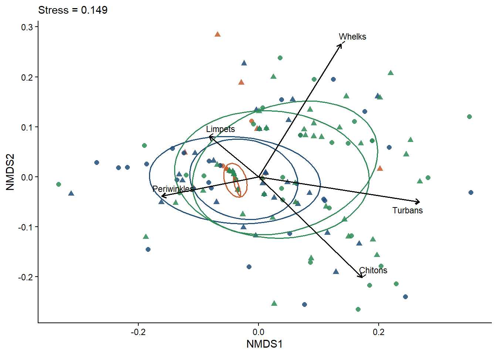
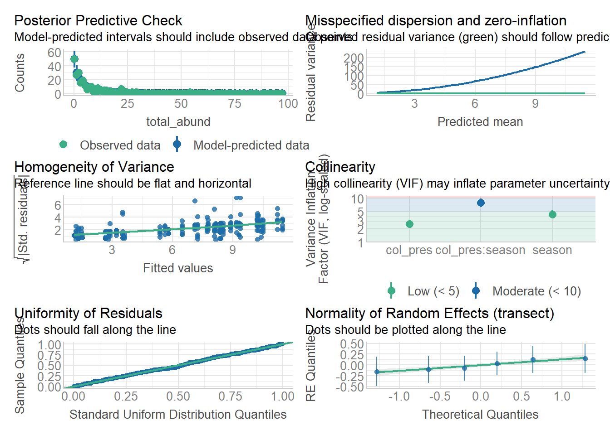

The datasets include repeated sampling across Transects and/or Plots, so we:
use mixed models with random intercepts for spatial sampling units (e.g., Transect, or Plot_Name),
and constrain permutations by transect for multivariate tests.
Density:
The transect size was 50 m² so I divided the counts by this value to get density per transect .
Community data:
Mobile inverts are counts (often overdispersed, zero-inflated).
Sessile “percent cover” is stored as proportions (0–1) in this dataset; we still treat it as compositional.
2 Packages and helpers
Code
# Corelibrary(tidyverse)library(janitor) # to clean the names for consistency# Mixed modelslibrary(glmmTMB) # flexible GLMMs (NB, Gamma, etc.)library(lme4) # LMMs (fallback)library(emmeans) # estimated marginal means / contrasts# Diagnosticslibrary(DHARMa) # residual simulation diagnostics for GLMMslibrary(performance) # assumption checks / R2 / collinearitylibrary(broom.mixed) # tidy() for mixed models# Multivariate community ecologylibrary(vegan) # adonis2, metaMDS, betadisper, envfitlibrary(pairwiseAdonis) # optional; pairwise PERMANOVA if needed# Figureslibrary(ggdist) # raincloud/half-eyelibrary(patchwork) # figure layoutslibrary(scales) # label_percent etc.library(ggrepel)# A consistent plotting theme for a papertheme_set(theme_classic(base_size =14) +# base size text is 14theme(panel.grid =element_blank(),axis.title =element_text(face ="bold"),legend.title =element_text(face ="bold") ))# Helper: safe logit transform for proportions in [0,1]# (useful for cover variables with 0s and 1s)logit01 <-function(p, eps =1e-4) { p2 <-pmin(pmax(p, eps), 1- eps)qlogis(p2)}
3 Import data
Paths assume the files are in the same folder as this Quarto file, or are in the working directory. When you move this notebook to the scripts folder and the data files into your data folder, update paths below. Note, I edited these files to remove the transects removed in your other script and to just bring in the normalized community composition data
Code
# File paths (edit if needed)path_size <-"limpet_size.csv"path_mobile <-"mobile_counts.csv"path_sess <-"sessile_percent_cover.csv"limpet_size_raw <-read_csv(path_size, show_col_types =FALSE) %>%clean_names() %>%mutate(season =ifelse(season =="Late_Spring", "Spring", season)) # for some reason the season is named Late spring here, but spring everywhere elsemobile_raw <-read_csv(path_mobile, show_col_types =FALSE) %>%clean_names()sessile_raw <-read_csv(path_sess, show_col_types =FALSE) %>%clean_names()glimpse(limpet_size_raw)
# to standardize the colors throughout the manuscriptseason_colors <-c( Winter ="#1F4E79",Spring ="#2E8B57",Fall ="#C65D2E")
4 Data cleaning and harmonization
We standardize: - season as an ordered factor - date as a real date (best-effort parse for differences across datasets) - col_pres to Yes/No factor - key grouping variables (transect, plot_name, etc.)
Code
# Season order season_levels <-c("Winter","Spring","Summer","Fall") # change this order to change order of the plots# Limpet size datasetlimpet_size <- limpet_size_raw %>%mutate(season =factor(season, levels = season_levels),# Dataset stores date as "YYYY_MM_DD" strings (e.g., 2023_09_29)date =parse_date_time(date, orders =c("Y_m_d", "Y_m", "Y-m-d", "Y/m/d")) %>%as_date(),plot_name =as.factor(plot_name),plot_side =as.factor(plot_side),sl_mm =as.numeric(sl_mm) ) %>%filter(!is.na(season), !is.na(sl_mm)) # remove the rows with NAs in length or season# Mobile invertebrate countsmobile <- mobile_raw %>%mutate(season =factor(season, levels = season_levels),date =parse_date_time(date, orders =c("Y_m_d", "Y_m", "Y-m-d", "Y/m/d")) %>%as_date(),transect =as.factor(transect),plot_name =as.factor(plot_name),col_pres =case_when(tolower(col_pres) %in%c("y","yes","true","t","1") ~"Yes",tolower(col_pres) %in%c("n","no","false","f","0") ~"No",TRUE~NA_character_ ) %>%factor(levels =c("No","Yes")) )# Sessile percent cover (in this file, cover columns appear to be proportions already: 0–1)sessile <- sessile_raw %>%mutate(season =factor(season, levels = season_levels),date =parse_date_time(date, orders =c("Y_m_d", "Y_m", "Y-m-d", "Y/m/d")) %>%as_date(),transect =as.factor(transect),plot_name =as.factor(plot_name),col_pres =case_when(tolower(col_pres) %in%c("y","yes","true","t","1") ~"Yes",tolower(col_pres) %in%c("n","no","false","f","0") ~"No",TRUE~NA_character_ ) %>%factor(levels =c("No","Yes")) )# Quick checkslimpet_size %>%count(season)
Code
mobile %>%count(season, col_pres)
Code
sessile %>%count(season, col_pres) ## looks like there are missing pairs of col present
5 Question 1: Do limpet density and size change by season?
5.1 1A. Density (true density; transect area = 50 m²)
You specified that each limpet-density sampling unit corresponds to a 50 m² transect. We therefore compute:
n_limpets = number of limpets observed in a sampling unit
density_m2 = n_limpets / 50
Code
limpet_density <- limpet_size %>%group_by(season, date, plot_name) %>%summarise(n_limpets =n(),# count all the limpets# True density (per m²) using known transect areaarea_m2 =50, ## double check this is correct. How long was the transect and how many meters on either size of the transect did you go? density_m2 = n_limpets / area_m2,mean_sl =mean(sl_mm, na.rm =TRUE), # mean size per transectsd_sl =sd(sl_mm, na.rm =TRUE), # standard deviation in size per transect.groups ="drop"# drop the groupings )limpet_density %>%glimpse()
p_density <- limpet_density %>%ggplot(aes(x = season, y = density_m2, color = season)) + ggdist::stat_halfeye(aes(x = season, y = density_m2, fill = season),adjust =0.7, width =0.6, justification =-0.15) +geom_boxplot(width =0.18, outlier.shape =NA) +## this removes the outliers from the boxplot-- only OK because I also have the stat_halfeye and the jittergeom_jitter(width =0.08, height =0, alpha =0.35) +labs(x =NULL, y ="Owl limpet density (individuals m⁻²)"#title = "Seasonal variation in owl limpet density" ) +scale_color_manual(values = season_colors)+scale_fill_manual(values = season_colors)+scale_y_continuous(expand =expansion(mult =c(0.02, 0.08)))+theme(legend.position ="none")p_density

5.1.2 Model: negative binomial GLMM (random effects for plot)
Counts are typically overdispersed; negative binomial is usually appropriate.
Code
m_density <-glmmTMB(# Model counts because negative binomial requires count data with an offset for sampled area to estimate density n_limpets ~ season +offset(log(area_m2)) + (1| plot_name),family =nbinom2(),data = limpet_density)summary(m_density)
Family: nbinom2 ( log )
Formula: n_limpets ~ season + offset(log(area_m2)) + (1 | plot_name)
Data: limpet_density
AIC BIC logLik -2*log(L) df.resid
321.1 327.4 -155.5 311.1 21
Random effects:
Conditional model:
Groups Name Variance Std.Dev.
plot_name (Intercept) 0.5694 0.7546
Number of obs: 26, groups: plot_name, 6
Dispersion parameter for nbinom2 family (): 2.7
Conditional model:
Estimate Std. Error z value Pr(>|z|)
(Intercept) 1.0614 0.3791 2.800 0.00511 **
seasonSpring -0.1866 0.2839 -0.657 0.51090
seasonFall 0.5682 0.3357 1.692 0.09058 .
---
Signif. codes: 0 '***' 0.001 '**' 0.01 '*' 0.05 '.' 0.1 ' ' 1
Code
performance::check_overdispersion(m_density)
# Overdispersion test
dispersion ratio = 0.305
p-value = 0.656
Code
performance::check_zeroinflation(m_density)
Model has no observed zeros in the response variable.
NULL
5.1.2.1 Diagnostics (DHARMa)
Code
sim_density <- DHARMa::simulateResiduals(m_density, n =1000)plot(sim_density)

Code
DHARMa::testDispersion(sim_density)

DHARMa nonparametric dispersion test via sd of residuals fitted vs.
simulated
data: simulationOutput
dispersion = 0.29278, p-value = 0.562
alternative hypothesis: two.sided
Code
DHARMa::testZeroInflation(sim_density)

DHARMa zero-inflation test via comparison to expected zeros with
simulation under H0 = fitted model
data: simulationOutput
ratioObsSim = 0, p-value = 1
alternative hypothesis: two.sided
5.1.2.2 Effect sizes: estimated marginal means and contrasts
Code
emm_density <-emmeans(m_density, ~ season, type ="response")# With the area offset, 'response' is on the expected count scale; divide by area to report densityemm_density
season response SE df asymp.LCL asymp.UCL
Winter 145 54.8 Inf 68.7 304
Spring 120 42.8 Inf 59.5 242
Fall 255 101.8 Inf 116.6 558
Confidence level used: 0.95
Intervals are back-transformed from the log scale
Code
pairs(emm_density, adjust ="tukey")
contrast ratio SE df null z.ratio p.value
Winter / Spring 1.205 0.342 Inf 1 0.657 0.7881
Winter / Fall 0.567 0.190 Inf 1 -1.692 0.2081
Spring / Fall 0.470 0.146 Inf 1 -2.425 0.0406
P value adjustment: tukey method for comparing a family of 3 estimates
Tests are performed on the log scale
5.1.2.3 Figure showing the actual model results: model-based means with uncertainty
Code
df_density_emm <-as.data.frame(emm_density) %>%mutate(area_m2 =50,density = response / area_m2,density_lower = asymp.LCL / area_m2,density_upper = asymp.UCL / area_m2 )# Note add in stars or letters or brackets based on significance testing from the emmeansp_density_emm <-ggplot(df_density_emm, aes(x = season, y = density)) +geom_jitter(data = limpet_density, aes(x = season, y = density_m2), alpha =0.5, width =0.1)+geom_point(size =4) +geom_errorbar(aes(ymin = density_lower, ymax = density_upper), width =0.12) +labs(x =NULL, y ="Estimated owl limpet density (individuals m⁻²)",title ="Seasonal effect on owl limpet density (model-based NB-GLMM with area offset)") +scale_y_continuous(expand =expansion(mult =c(0.02, 0.08)))p_density_emm

5.2 1B. Size (sl_mm) by season
Because sl_mm is continuous and strictly positive, we typically choose either: - Gamma GLMM or Tweedie GLMM with log link, or - LMM on log-transformed sizes.
Here, we start with Gamma GLMM and fallback if needed. The Gamma was not a good fit so I went to Tweedie which was better but still not great. Keep looking…. the bimodal sizes makes this harder
5.2.1 Gamma or Tweedie GLMM with random effects for plot
Code
m_size_gamma <-glmmTMB( sl_mm ~ season + (1| plot_name),dispformula =~ season, # Model dispersion as a function of season because unequal variancesfamily =tweedie(link ="log"), # better but still not the best, but I trust more this modeldata = limpet_size)summary(m_size_gamma)
sim_size <- DHARMa::simulateResiduals(m_size_gamma, n =1000)plot(sim_size)

Code
DHARMa::testDispersion(sim_size)

DHARMa nonparametric dispersion test via sd of residuals fitted vs.
simulated
data: simulationOutput
dispersion = 1.0117, p-value = 0.77
alternative hypothesis: two.sided
5.2.1.2 Estimated marginal means (back-transformed to mm)
Code
emm_size <-emmeans(m_size_gamma, ~ season, type ="response")emm_size
season response SE df asymp.LCL asymp.UCL
Winter 42.5 2.05 Inf 38.6 46.7
Spring 41.5 1.99 Inf 37.7 45.6
Fall 42.5 2.03 Inf 38.7 46.7
Confidence level used: 0.95
Intervals are back-transformed from the log scale
Code
pairs(emm_size, adjust ="tukey")
contrast ratio SE df null z.ratio p.value
Winter / Spring 1.024 0.0140 Inf 1 1.754 0.1855
Winter / Fall 1.000 0.0134 Inf 1 -0.028 0.9996
Spring / Fall 0.976 0.0125 Inf 1 -1.906 0.1369
P value adjustment: tukey method for comparing a family of 3 estimates
Tests are performed on the log scale
5.2.2 Different kind of visual to look at size structure shifts (CDFs)
Cumulative distributions are great for communicating shifts in size structure (e.g., truncation).
You would interprethis this plot byt saying: “For each season, what fraction of limpets are smaller than a given shell length?”
Example interpretations of the plot
Steeper ECDF at small sizes in Spring → Maybe recent recruitment or better post-settlement survival
Right-shifted ECDF in Fall/Summer → growth of survivors after spring recruitment?
These patterns often cannot be detected by mean-based models alone.
“We visualized seasonal shifts in owl limpet size structure using empirical cumulative distribution functions (ECDFs), which depict the proportion of individuals that are smaller than a given shell length without assuming an underlying distribution.”
Code
p_cdf <- limpet_size %>%ggplot(aes(x = sl_mm, color = season)) +stat_ecdf(linewidth =1) +scale_color_manual(values = season_colors)+labs(x ="Shell length (mm)", y ="Empirical CDF",#title = "Seasonal shifts in size structure (ECDF)" ) +theme(legend.position ="none")p_cdf

You would start with the mean values that you get from the emmeans output of the size model, state if there are any differences and then interpretit this model. The empirical cumulative distribution functions (ECDFs) showed seasonal differences in size structure beyond mean responses. For a given shell length, the proportion of individuals by size differed among seasons, indicating seasonal shifts in the relative abundance of small versus large individuals. In particular, Spring exhibited a higher proportion of small individuals across much of the size range, whereas Fall and Winter showed a right-shifted distribution consistent with a greater representation of larger individuals.
Code
## Bring the figures together for pub quality## Add in stars with brackes to show significance between seasons based on emmeans(p_density|p_size|p_cdf)+plot_annotation(tag_levels ="a")
6 Question 2: Does limpet presence affect community composition, and does it interact with season?
We analyze both: - Mobile invertebrate counts (multivariate & univariate) - Sessile cover composition (multivariate & univariate) – I am having a hard time with the sessile data. Seems like everything is mostly bare rock and I am not sure what the microalgae are here
Key fixed effects: - col_pres (No vs Yes) - season - col_pres * season interaction
Random/blocking structure: - transect is used for random effects and permutation strata (to respect spatial non-independence).
7 2A. Mobile invertebrates (counts)
7.1 Identify species columns
Code
# group by species groups firstmobile_grouped<-mobile %>%mutate(Limpets =rowSums(across(c(l_limatula, l_scabra, l_gigantea))),Chitons =rowSums(across(c(nuttallina_sp, mopalia_sp, l_hartwegii,l_dentiens))),Turbans =rowSums(across(c(t_eiseni:t_gallina))),Periwinkles =rowSums(across(c(l_plena, l_keenae))),Whelks = m_lugubris) %>%select(-c(m_lugubris:l_gigantea))# metadatamobile_meta <-c("season","date","transect","plot_name","l_r","meter_no","col_pres","t_f","tag_id")mobile_spp <- mobile_grouped %>%select(-any_of(mobile_meta))# Sanity checks: are these non-negative counts?summary(mobile_spp)
Limpets Chitons Turbans Periwinkles
Min. : 0.000 Min. :0.00 Min. : 0.00 Min. : 0.00
1st Qu.: 0.000 1st Qu.:0.00 1st Qu.: 0.00 1st Qu.: 0.00
Median : 2.000 Median :0.00 Median : 0.00 Median : 0.00
Mean : 3.502 Mean :0.25 Mean : 1.95 Mean : 0.65
3rd Qu.: 4.000 3rd Qu.:0.00 3rd Qu.: 1.00 3rd Qu.: 0.00
Max. :50.000 Max. :6.00 Max. :26.00 Max. :31.00
NA's :1
Whelks
Min. :0.0000
1st Qu.:0.0000
Median :0.0000
Mean :0.3583
3rd Qu.:0.0000
Max. :6.0000
7.2 Transformations for multivariate analyses
For community composition, we typically: - use gower on square-root transformed counts since lots of zeros. Bray-Curtis did not work.
For Gower, multiplying all counts by the same constant (e.g., converting to per m² when all plots have identical area) does not change dissimilarities; we still report univariate abundance in m⁻² for interpretability.
Code
mobile_mat <- mobile_spp %>%mutate(across(everything(), ~replace_na(., 0))) %>%# make the missing values zerosas.matrix()# gower dissimilarity on sqrt counts because 0s presentmobile_bc <-vegdist(sqrt(mobile_mat), method ="gower")
7.3 PERMANOVA (adonis2) with permutations constrained by transect
This tests whether multivariate centroids differ by predictors.
# Yes clearly very different dispersion (the size of the circle)--but driven by season based on pairwise
7.5 Ordination: NMDS (visualize patterns)
Code
set.seed(2)nmds_mobile <-metaMDS(sqrt(mobile_mat), distance ="gower", k =2, trymax =100)
Run 0 stress 0.1489316
Run 1 stress 0.1654009
Run 2 stress 0.1493779
... Procrustes: rmse 0.0184872 max resid 0.09501029
Run 3 stress 0.1512335
Run 4 stress 0.1679303
Run 5 stress 0.1605025
Run 6 stress 0.1705089
Run 7 stress 0.1553655
Run 8 stress 0.155486
Run 9 stress 0.1736175
Run 10 stress 0.1824326
Run 11 stress 0.1502856
Run 12 stress 0.1516814
Run 13 stress 0.1642361
Run 14 stress 0.1499779
Run 15 stress 0.1578936
Run 16 stress 0.1609995
Run 17 stress 0.1551711
Run 18 stress 0.1562567
Run 19 stress 0.1500442
Run 20 stress 0.1565818
Run 21 stress 0.1564403
Run 22 stress 0.1721126
Run 23 stress 0.1702597
Run 24 stress 0.1508816
Run 25 stress 0.1566659
Run 26 stress 0.1848796
Run 27 stress 0.1664247
Run 28 stress 0.1499771
Run 29 stress 0.1788115
Run 30 stress 0.1498233
Run 31 stress 0.1636457
Run 32 stress 0.1617082
Run 33 stress 0.1740417
Run 34 stress 0.1864239
Run 35 stress 0.1554597
Run 36 stress 0.1680007
Run 37 stress 0.1493769
... Procrustes: rmse 0.01842455 max resid 0.09482328
Run 38 stress 0.1501574
Run 39 stress 0.1517239
Run 40 stress 0.1671198
Run 41 stress 0.1745603
Run 42 stress 0.1675747
Run 43 stress 0.1733566
Run 44 stress 0.157234
Run 45 stress 0.1537599
Run 46 stress 0.1497737
Run 47 stress 0.1558914
Run 48 stress 0.1497397
Run 49 stress 0.1517776
Run 50 stress 0.1569672
Run 51 stress 0.1551634
Run 52 stress 0.1563097
Run 53 stress 0.15176
Run 54 stress 0.1741338
Run 55 stress 0.1506005
Run 56 stress 0.1562566
Run 57 stress 0.1493782
... Procrustes: rmse 0.01851924 max resid 0.09511483
Run 58 stress 0.1609774
Run 59 stress 0.1700217
Run 60 stress 0.1566831
Run 61 stress 0.1811786
Run 62 stress 0.1577438
Run 63 stress 0.1696181
Run 64 stress 0.1535253
Run 65 stress 0.1584971
Run 66 stress 0.1702018
Run 67 stress 0.1502856
Run 68 stress 0.1661467
Run 69 stress 0.1603195
Run 70 stress 0.1497739
Run 71 stress 0.1489312
... New best solution
... Procrustes: rmse 0.0001565671 max resid 0.001659091
... Similar to previous best
*** Best solution repeated 1 times
Code
nmds_mobile$stress #get the stress
[1] 0.1489312
Code
# --- NMDS biplot for MOBILE invertebrates ( species vectors) ----set.seed(42)# Fit species vectors to the NMDS using envfit# - "display = 'species'" returns directions for each taxa# - we fit to sqrt(mobile_mat) if NMDS was based on sqrt countsfit_spp <-envfit(nmds_mobile, sqrt(mobile_mat), permutations =999)# Extract site scoressites_df <-scores(nmds_mobile, display ="sites") %>%as.data.frame() %>%rownames_to_column("site_id") %>%bind_cols(mobile_grouped %>%mutate(site_id =row_number()) %>%select(site_id, season, col_pres, transect))# Extract species vectors + p-values; keep only significant / strong onesvec_df <-scores(fit_spp, display ="vectors") %>%as.data.frame() %>%rownames_to_column("taxon") %>%# p-values are in fit_spp$vectors$pvals; same order as rows in scores()mutate(p = fit_spp$vectors$pvals) %>%# vector strength (longer = stronger relationship with ordination)mutate(r =sqrt(NMDS1^2+ NMDS2^2)) %>%arrange(p) ## all the species have significant vectors# Choose which taxa to label: either significant + top N by vector lengthalpha <-0.05top_n <-12vec_keep <- vec_df %>%filter(p <= alpha) %>%slice_max(order_by = r, n = top_n)# Scale vectors to match plot extent (so arrows look nice)# This rescales arrows relative to NMDS axes range.arrow_mult <-0.85*min(diff(range(sites_df$NMDS1)) /diff(range(vec_keep$NMDS1)),diff(range(sites_df$NMDS2)) /diff(range(vec_keep$NMDS2)))vec_keep <- vec_keep %>%mutate(NMDS1 = NMDS1 * arrow_mult,NMDS2 = NMDS2 * arrow_mult)# Plot: sites + ellipses + species vectors (biplot)p_biplot_mobile <-ggplot(sites_df, aes(NMDS1, NMDS2)) +# Sitesgeom_point(aes(color = season, shape = col_pres), alpha =0.85, size =2) +# Group ellipsesstat_ellipse(aes(group =interaction(season, col_pres), color = season),level =0.68, linewidth =0.7, show.legend =FALSE) +# Species arrowsgeom_segment(data = vec_keep,aes(x =0, y =0, xend = NMDS1, yend = NMDS2),inherit.aes =FALSE,linewidth =0.7,arrow =arrow(length =unit(0.18, "cm")) ) +# Species labels ggrepel::geom_text_repel(data = vec_keep,aes(x = NMDS1, y = NMDS2, label = taxon),inherit.aes =FALSE,size =3,max.overlaps =Inf,min.segment.length =0 ) +scale_color_manual(values = season_colors) +labs(#title = "Mobile invertebrates NMDS biplot",subtitle =paste0("Stress = ", round(nmds_mobile$stress, 3)),color ="Season",shape ="Owl limpet present?" ) +theme_classic()+theme(legend.position ="none")p_biplot_mobile

7.6 Univariate summaries (total abundance)
These are interpretable “whole-community” metrics.
Code
mobile_alpha <- mobile_grouped %>%rowwise() %>%mutate(# mobile plot is 0.25 m² -- I think??? what is it?area_m2 =0.25,total_abund =sum(c_across(all_of(colnames(mobile_mat))), na.rm =TRUE),total_abund_m2 = total_abund / area_m2, ) %>%ungroup()mobile_alpha %>%select(season, col_pres, transect, total_abund) %>%glimpse()
Rows: 240
Columns: 4
$ season <fct> Fall, Fall, Fall, Fall, Fall, Fall, Fall, Fall, Fall, Fall…
$ col_pres <fct> Yes, No, Yes, No, Yes, No, Yes, No, Yes, No, Yes, No, Yes,…
$ transect <fct> CNM_1, CNM_1, CNM_1, CNM_1, CNM_1, CNM_1, CNM_1, CNM_1, CN…
$ total_abund <dbl> 0, 1, 0, 1, 0, 6, 0, 5, 1, 2, 1, 1, 2, 0, 0, 1, 24, 6, 1, …
7.6.1 Mixed models for Individual metrics
total_abund: NB GLMM
Code
m_mobile_total <-glmmTMB(# Model counts with area offset to infer abundance density (per m²) total_abund ~ col_pres * season +offset(log(area_m2)) + (1| transect),family =nbinom2(),data = mobile_alpha)summary(m_mobile_total)
# Look at the species pairsemm_total <-emmeans(m_mobile_total, ~ col_pres|season, type ="response")pairs(emm_total, adjust ="tukey")
season = Winter:
contrast ratio SE df null z.ratio p.value
No / Yes 1.581 0.397 Inf 1 1.824 0.0682
season = Spring:
contrast ratio SE df null z.ratio p.value
No / Yes 1.007 0.254 Inf 1 0.028 0.9774
season = Fall:
contrast ratio SE df null z.ratio p.value
No / Yes 0.418 0.131 Inf 1 -2.782 0.0054
Tests are performed on the log scale
Code
performance::check_model(m_mobile_total)

Code
# here is your example for limpets. Do for the rest of the speciesm_mobile_Limpet <-glmmTMB(# Model counts with area offset to infer abundance density (per m²) Limpets ~ col_pres * season +offset(log(area_m2)) + (1| transect),family =nbinom2(),data = mobile_alpha)summary(m_mobile_Limpet)
emm_limpet <-emmeans(m_mobile_Limpet, ~ col_pres|season, type ="response")pairs(emm_limpet, adjust ="tukey")
season = Winter:
contrast ratio SE df null z.ratio p.value
No / Yes 2.09 0.632 Inf 1 2.447 0.0144
season = Spring:
contrast ratio SE df null z.ratio p.value
No / Yes 1.13 0.361 Inf 1 0.378 0.7053
season = Fall:
contrast ratio SE df null z.ratio p.value
No / Yes 0.48 0.174 Inf 1 -2.028 0.0426
Tests are performed on the log scale
7.6.2 Figure: total abundance by COL presence and season
Code
# everythingp_alpha <- mobile_alpha %>%pivot_longer(cols =c(Limpets:Whelks, total_abund_m2 ), names_to ="metric", values_to ="value") %>%mutate(value_log = value+1)%>%ggplot(aes(x = season, y = value_log, shape = col_pres, color = season)) +coord_trans(y ="log")+scale_color_manual(values = season_colors)+scale_fill_manual(values = season_colors)+# ggdist::stat_halfeye(position = position_dodge(width = 0.7), alpha = 0.7) +geom_violin(position =position_dodge(width =0.7), alpha =0.25, linewidth =0.5,aes(fill = season), color =NULL)+#outlier.shape = NA, alpha = 0.5) +stat_summary(position =position_dodge(width =0.7))+facet_wrap(~ metric, scales ="free_y")+labs(y ="Density (m⁻²)", x =NULL, fill ="Owl limpet present?",# title = "Mobile invertebrate alpha metrics vs limpet presence and season" ) +theme(legend.position ="none")## total abundance onlyp_total <- mobile_alpha %>%ggplot(aes(x = season, y = total_abund_m2+1, shape = col_pres, color = season)) +coord_trans(y ="log")+scale_color_manual(values = season_colors)+scale_fill_manual(values = season_colors)+# ggdist::stat_halfeye(position = position_dodge(width = 0.7), alpha = 0.7) +geom_violin(position =position_dodge(width =0.7), alpha =0.25, linewidth =0.5,aes(fill = season), color =NULL, show.legend =FALSE)+#outlier.shape = NA, alpha = 0.5) +stat_summary(position =position_dodge(width =0.7), size =1.5)+labs(y ="Total density (m⁻²)", x =NULL, shape ="Owl limpet present?",# title = "Mobile invertebrate alpha metrics vs limpet presence and season" ) +theme(legend.position ="top")## add in brackets for yes/no pairs for ones that are significant based on emmeans and clean up the title of total_abunc... and double check that the area is correct since I think you did it two different waysp_alpha+p_biplot_mobile+plot_annotation(tag_levels ="a")
a_elegantissima phragmatopoma_californica chtalmus_balanus bare_rock
Min. :0.0000 Min. :0 Min. :0.0000 Min. :0.0000
1st Qu.:0.0000 1st Qu.:0 1st Qu.:0.0000 1st Qu.:0.5000
Median :0.0000 Median :0 Median :0.1875 Median :0.7500
Mean :0.0051 Mean :0 Mean :0.2838 Mean :0.6749
3rd Qu.:0.0000 3rd Qu.:0 3rd Qu.:0.4545 3rd Qu.:0.9091
Max. :0.1667 Max. :0 Max. :1.0000 Max. :1.0000
ralfsia_sp coralline_crust endocaldia_sp p_polymerus
Min. :0.00000 Min. :0.0000000 Min. :0.0000000 Min. :0.000000
1st Qu.:0.00000 1st Qu.:0.0000000 1st Qu.:0.0000000 1st Qu.:0.000000
Median :0.00000 Median :0.0000000 Median :0.0000000 Median :0.000000
Mean :0.03298 Mean :0.0002593 Mean :0.0005187 Mean :0.001273
3rd Qu.:0.00000 3rd Qu.:0.0000000 3rd Qu.:0.0000000 3rd Qu.:0.000000
Max. :0.81818 Max. :0.0625000 Max. :0.1250000 Max. :0.181818
ulva_sp
Min. :0.0000000
1st Qu.:0.0000000
Median :0.0000000
Mean :0.0007544
3rd Qu.:0.0000000
Max. :0.1818182
Permutation test for homogeneity of multivariate dispersions
Permutation: free
Number of permutations: 999
Response: Distances
Df Sum Sq Mean Sq F N.Perm Pr(>F)
Groups 5 0.01354 0.0027074 0.8989 999 0.501
Residuals 235 0.70779 0.0030118
8.4 Ordination: NMDS
Code
set.seed(4)nmds_sess <-metaMDS(sess_mat, distance ="gower", k =2, trymax =100)
Run 0 stress 0.05740934
Run 1 stress 0.07123927
Run 2 stress 0.07996556
Run 3 stress 0.08369677
Run 4 stress 0.08414332
Run 5 stress 0.08177604
Run 6 stress 0.06418628
Run 7 stress 0.08161958
Run 8 stress 0.05605864
... New best solution
... Procrustes: rmse 0.006335537 max resid 0.09642943
Run 9 stress 0.08153305
Run 10 stress 0.07967093
Run 11 stress 0.08734661
Run 12 stress 0.08339535
Run 13 stress 0.07948711
Run 14 stress 0.08265934
Run 15 stress 0.07046075
Run 16 stress 0.08711846
Run 17 stress 0.07229157
Run 18 stress 0.08611204
Run 19 stress 0.07467488
Run 20 stress 0.07185772
Run 21 stress 0.08760216
Run 22 stress 0.08698172
Run 23 stress 0.08019455
Run 24 stress 0.0762507
Run 25 stress 0.05880039
Run 26 stress 0.0827729
Run 27 stress 0.07909504
Run 28 stress 0.07968832
Run 29 stress 0.08417041
Run 30 stress 0.0774087
Run 31 stress 0.05878496
Run 32 stress 0.08642792
Run 33 stress 0.07081274
Run 34 stress 0.07323221
Run 35 stress 0.08819048
Run 36 stress 0.06322144
Run 37 stress 0.05878399
Run 38 stress 0.07890025
Run 39 stress 0.087898
Run 40 stress 0.06838705
Run 41 stress 0.08306189
Run 42 stress 0.0827603
Run 43 stress 0.06782013
Run 44 stress 0.08306559
Run 45 stress 0.06482403
Run 46 stress 0.07661064
Run 47 stress 0.08398423
Run 48 stress 0.08434384
Run 49 stress 0.06971111
Run 50 stress 0.06274988
Run 51 stress 0.05849546
Run 52 stress 0.06197518
Run 53 stress 0.06510409
Run 54 stress 0.08394029
Run 55 stress 0.07942564
Run 56 stress 0.07291217
Run 57 stress 0.0822933
Run 58 stress 0.06518959
Run 59 stress 0.07139404
Run 60 stress 0.08072635
Run 61 stress 0.07895587
Run 62 stress 0.08603784
Run 63 stress 0.08469142
Run 64 stress 0.08119509
Run 65 stress 0.06923559
Run 66 stress 0.0764816
Run 67 stress 0.08564673
Run 68 stress 0.08474302
Run 69 stress 0.07756212
Run 70 stress 0.08710173
Run 71 stress 0.06062404
Run 72 stress 0.07835221
Run 73 stress 0.0732897
Run 74 stress 0.08438178
Run 75 stress 0.08395705
Run 76 stress 0.07068419
Run 77 stress 0.07152341
Run 78 stress 0.08158971
Run 79 stress 0.08170725
Run 80 stress 0.07735774
Run 81 stress 0.06670814
Run 82 stress 0.08131518
Run 83 stress 0.08273408
Run 84 stress 0.07456874
Run 85 stress 0.07108209
Run 86 stress 0.07963305
Run 87 stress 0.06991005
Run 88 stress 0.06951594
Run 89 stress 0.08750777
Run 90 stress 0.06911316
Run 91 stress 0.07771445
Run 92 stress 0.06804276
Run 93 stress 0.07002528
Run 94 stress 0.06414735
Run 95 stress 0.07578108
Run 96 stress 0.06370066
Run 97 stress 0.07245112
Run 98 stress 0.08448136
Run 99 stress 0.0877698
Run 100 stress 0.08069743
*** Best solution was not repeated -- monoMDS stopping criteria:
5: no. of iterations >= maxit
83: stress ratio > sratmax
12: scale factor of the gradient < sfgrmin
Depending on your ecological framing, response variables may include: - Bare rock (space availability) - Erect fleshy algae (here likely ulva_sp, endocaldia_sp, etc.) - Crustose coralline algae (coralline_crust) - Barnacles (chtalmus_balanus) - Tube worms (phragmatopoma_californica) etc.
Where is the microalgae?
Because cover is proportional (0–1), a practical approach is: - transform with logit01() and use LMM/GLMM with Gaussian errors, OR - Beta regression (more complex; glmmTMB can do it with family = beta_family()).
Here we demonstrate logit-transformed LMMs with transect random intercepts.
Code
# Choose a few focal cover variables to test (edit for your hypotheses)focal_cover <-c("bare_rock", "ulva_sp", "coralline_crust", "chtalmus_balanus", "ralfsia_sp")sess_long <- sessile %>%pivot_longer(cols =all_of(focal_cover), names_to ="taxon", values_to ="cover") %>%mutate(cover =as.numeric(cover),cover_logit =logit01(cover) )# Fit one model per taxon (pre-specified list!)models_cover <- sess_long %>%group_by(taxon) %>%group_map(~{lmer(cover_logit ~ col_pres * season + (1| transect), data = .x) })names(models_cover) <-unique(sess_long$taxon)# Summarieslapply(models_cover, summary)
$bare_rock
Linear mixed model fit by REML ['lmerMod']
Formula: cover_logit ~ col_pres * season + (1 | transect)
Data: .x
REML criterion at convergence: 1274.8
Scaled residuals:
Min 1Q Median 3Q Max
-3.2937 -0.4351 -0.1172 0.2428 2.4750
Random effects:
Groups Name Variance Std.Dev.
transect (Intercept) 0.4097 0.640
Residual 11.8728 3.446
Number of obs: 241, groups: transect, 6
Fixed effects:
Estimate Std. Error t value
(Intercept) 1.71033 0.59829 2.859
col_presYes -0.04118 0.74817 -0.055
seasonSpring -0.63602 0.76116 -0.836
seasonFall -0.06670 0.79447 -0.084
col_presYes:seasonSpring 1.28211 1.05812 1.212
col_presYes:seasonFall -0.57466 1.10859 -0.518
Correlation of Fixed Effects:
(Intr) cl_prY ssnSpr ssnFll cl_Y:S
col_presYes -0.647
seasonSprng -0.636 0.509
seasonFall -0.609 0.486 0.479
cl_prsYs:sS 0.458 -0.707 -0.720 -0.344
cl_prsYs:sF 0.437 -0.675 -0.344 -0.713 0.477
$ulva_sp
Linear mixed model fit by REML ['lmerMod']
Formula: cover_logit ~ col_pres * season + (1 | transect)
Data: .x
REML criterion at convergence: 1316.5
Scaled residuals:
Min 1Q Median 3Q Max
-2.1943 -0.3816 0.1132 0.4894 3.2218
Random effects:
Groups Name Variance Std.Dev.
transect (Intercept) 5.786 2.406
Residual 13.582 3.685
Number of obs: 241, groups: transect, 6
Fixed effects:
Estimate Std. Error t value
(Intercept) -3.2127 1.1384 -2.822
col_presYes 0.3020 0.8004 0.377
seasonSpring 0.8927 0.8142 1.096
seasonFall 0.4340 0.8508 0.510
col_presYes:seasonSpring -0.8577 1.1320 -0.758
col_presYes:seasonFall -0.7028 1.1859 -0.593
Correlation of Fixed Effects:
(Intr) cl_prY ssnSpr ssnFll cl_Y:S
col_presYes -0.364
seasonSprng -0.358 0.509
seasonFall -0.342 0.485 0.478
cl_prsYs:sS 0.257 -0.707 -0.720 -0.343
cl_prsYs:sF 0.246 -0.675 -0.344 -0.712 0.478
$coralline_crust
Linear mixed model fit by REML ['lmerMod']
Formula: cover_logit ~ col_pres * season + (1 | transect)
Data: .x
REML criterion at convergence: 280.1
Scaled residuals:
Min 1Q Median 3Q Max
-0.3785 0.0000 0.0000 0.0000 15.1416
Random effects:
Groups Name Variance Std.Dev.
transect (Intercept) 1.076e-17 3.28e-09
Residual 1.755e-01 4.19e-01
Number of obs: 241, groups: transect, 6
Fixed effects:
Estimate Std. Error t value
(Intercept) -9.05165 0.06543 -138.343
col_presYes -0.15859 0.09094 -1.744
seasonSpring -0.15859 0.09253 -1.714
seasonFall -0.15859 0.09642 -1.645
col_presYes:seasonSpring 0.15859 0.12861 1.233
col_presYes:seasonFall 0.15859 0.13476 1.177
Correlation of Fixed Effects:
(Intr) cl_prY ssnSpr ssnFll cl_Y:S
col_presYes -0.719
seasonSprng -0.707 0.509
seasonFall -0.679 0.488 0.480
cl_prsYs:sS 0.509 -0.707 -0.719 -0.345
cl_prsYs:sF 0.486 -0.675 -0.343 -0.715 0.477
optimizer (nloptwrap) convergence code: 0 (OK)
boundary (singular) fit: see help('isSingular')
$chtalmus_balanus
Linear mixed model fit by REML ['lmerMod']
Formula: cover_logit ~ col_pres * season + (1 | transect)
Data: .x
REML criterion at convergence: 1130.3
Scaled residuals:
Min 1Q Median 3Q Max
-1.5959 -0.5682 -0.2328 0.0854 3.4062
Random effects:
Groups Name Variance Std.Dev.
transect (Intercept) 1.070 1.034
Residual 6.258 2.502
Number of obs: 241, groups: transect, 6
Fixed effects:
Estimate Std. Error t value
(Intercept) -8.0319 0.5753 -13.961
col_presYes 0.3517 0.5433 0.647
seasonSpring -0.6012 0.5527 -1.088
seasonFall -0.2982 0.5774 -0.516
col_presYes:seasonSpring -0.6537 0.7683 -0.851
col_presYes:seasonFall 1.0576 0.8049 1.314
Correlation of Fixed Effects:
(Intr) cl_prY ssnSpr ssnFll cl_Y:S
col_presYes -0.489
seasonSprng -0.480 0.509
seasonFall -0.459 0.485 0.478
cl_prsYs:sS 0.346 -0.707 -0.720 -0.344
cl_prsYs:sF 0.330 -0.675 -0.344 -0.712 0.478
$ralfsia_sp
Linear mixed model fit by REML ['lmerMod']
Formula: cover_logit ~ col_pres * season + (1 | transect)
Data: .x
REML criterion at convergence: 359.1
Scaled residuals:
Min 1Q Median 3Q Max
-0.4961 -0.0575 0.0101 0.0131 15.0837
Random effects:
Groups Name Variance Std.Dev.
transect (Intercept) 0.001227 0.03503
Residual 0.244655 0.49463
Number of obs: 241, groups: transect, 6
Fixed effects:
Estimate Std. Error t value
(Intercept) -9.209532 0.078563 -117.224
col_presYes -0.001304 0.107376 -0.012
seasonSpring -0.000863 0.109250 -0.008
seasonFall 0.001485 0.113891 0.013
col_presYes:seasonSpring 0.001667 0.151854 0.011
col_presYes:seasonFall 0.215480 0.159112 1.354
Correlation of Fixed Effects:
(Intr) cl_prY ssnSpr ssnFll cl_Y:S
col_presYes -0.707
seasonSprng -0.695 0.509
seasonFall -0.667 0.488 0.480
cl_prsYs:sS 0.500 -0.707 -0.720 -0.345
cl_prsYs:sF 0.477 -0.675 -0.343 -0.715 0.477
8.5.1 Figure: focal cover responses
Code
p_cover <- sess_long %>%ggplot(aes(x = season, y = cover, fill = col_pres)) +# geom_point(position = position_dodge(width = 0.7))+# ggdist::stat_halfeye(position = position_dodge(width = 0.7), alpha = 0.7) +geom_violin(position =position_dodge(width =0.7), # outlier.shape = NA, alpha =0.5) +facet_wrap(~ taxon, scales ="free_y", ncol =2) +labs(x =NULL, y ="Proportional cover", fill ="Owl limpet present?",title ="Sessile functional/taxon cover vs limpet presence and season") +theme(legend.position ="top")p_cover
9 Ecological interpretation (how to read results – fill in below with your references)
9.1 1) Seasonal density and size patterns (what’s plausible)
Depending on your results, common mechanisms include:
Recruitment pulses (seasonal larval supply) can increase density of small limpets after settlement. – What else do you think?
For owl limpets specifically: - Lottia gigantea is well known for territorial grazing that can maintain “gardens” of microalgae and influence space availability and algal cover (citations).
- What else?
9.2 2) Limpet presence effects on community composition (expected directions)
fill in
Season interactions are common because: - why?
9.3 potenitial storyline
“Seasonal dynamics modulate the engineering role of a territorial grazer.”
9.4 Journals to think about
Marine Ecology Progress Series (MEPS)
Journal of Experimental Marine Biology and Ecology
PeerJ
Source Code
---title: "Cabrillo National Monument: Owl limpet seasonality and community effects"subtitle: "A mix of univariate of multivariate statistics to test seasonality in both limpet size/density and community responses"author: "Nyssa/Cindy"date: "`r format(Sys.Date(), '%Y-%m-%d')`"format: html: toc: true toc-depth: 3 number-sections: true theme: cosmo code-fold: show code-tools: true df-print: pagedexecute: warning: false message: false cache: false---## OverviewThis Quarto notebook analyzes three datasets from **Cabrillo National Monument (San Diego, CA)** to answer:1. **Seasonality in owl limpets (*Lottia gigantea*)** - Does **density** change by **Season**? - Does **size** (shell length, `SL_mm`) change by **Season**?2. **Community consequences of limpet presence** - Does **owl limpet presence** (`COL_pres`) affect: - **Mobile invertebrate composition** (counts)? - **Sessile cover composition** (% cover / proportional cover)? - Are there **interactions with Season**?### Design assumptions and why they matter - The datasets include repeated sampling across **Transects** and/or **Plots**, so we: - use **mixed models** with **random intercepts** for spatial sampling units (e.g., `Transect`, or `Plot_Name`), - and constrain permutations by transect for multivariate tests.- **Density**: - The transect size was **50 m²** so I divided the counts by this value to get density per transect .- **Community data**: - Mobile inverts are **counts** (often overdispersed, zero-inflated). - Sessile “percent cover” is stored as **proportions** (0–1) in this dataset; we still treat it as compositional.---## Packages and helpers```{r}# Corelibrary(tidyverse)library(janitor) # to clean the names for consistency# Mixed modelslibrary(glmmTMB) # flexible GLMMs (NB, Gamma, etc.)library(lme4) # LMMs (fallback)library(emmeans) # estimated marginal means / contrasts# Diagnosticslibrary(DHARMa) # residual simulation diagnostics for GLMMslibrary(performance) # assumption checks / R2 / collinearitylibrary(broom.mixed) # tidy() for mixed models# Multivariate community ecologylibrary(vegan) # adonis2, metaMDS, betadisper, envfitlibrary(pairwiseAdonis) # optional; pairwise PERMANOVA if needed# Figureslibrary(ggdist) # raincloud/half-eyelibrary(patchwork) # figure layoutslibrary(scales) # label_percent etc.library(ggrepel)# A consistent plotting theme for a papertheme_set(theme_classic(base_size =14) +# base size text is 14theme(panel.grid =element_blank(),axis.title =element_text(face ="bold"),legend.title =element_text(face ="bold") ))# Helper: safe logit transform for proportions in [0,1]# (useful for cover variables with 0s and 1s)logit01 <-function(p, eps =1e-4) { p2 <-pmin(pmax(p, eps), 1- eps)qlogis(p2)}```---## Import data> **Paths** assume the files are in the same folder as this Quarto file, or are in the working directory.> When you move this notebook to the scripts folder and the data files into your data folder, update paths below. > Note, I edited these files to remove the transects removed in your other script and to just bring in the normalized community composition data```{r}# File paths (edit if needed)path_size <-"limpet_size.csv"path_mobile <-"mobile_counts.csv"path_sess <-"sessile_percent_cover.csv"limpet_size_raw <-read_csv(path_size, show_col_types =FALSE) %>%clean_names() %>%mutate(season =ifelse(season =="Late_Spring", "Spring", season)) # for some reason the season is named Late spring here, but spring everywhere elsemobile_raw <-read_csv(path_mobile, show_col_types =FALSE) %>%clean_names()sessile_raw <-read_csv(path_sess, show_col_types =FALSE) %>%clean_names()glimpse(limpet_size_raw)glimpse(mobile_raw)glimpse(sessile_raw)# to standardize the colors throughout the manuscriptseason_colors <-c( Winter ="#1F4E79",Spring ="#2E8B57",Fall ="#C65D2E")```---## Data cleaning and harmonizationWe standardize:- `season` as an **ordered factor**- `date` as a real date (best-effort parse for differences across datasets)- `col_pres` to **Yes/No** factor- key grouping variables (`transect`, `plot_name`, etc.)```{r}# Season order season_levels <-c("Winter","Spring","Summer","Fall") # change this order to change order of the plots# Limpet size datasetlimpet_size <- limpet_size_raw %>%mutate(season =factor(season, levels = season_levels),# Dataset stores date as "YYYY_MM_DD" strings (e.g., 2023_09_29)date =parse_date_time(date, orders =c("Y_m_d", "Y_m", "Y-m-d", "Y/m/d")) %>%as_date(),plot_name =as.factor(plot_name),plot_side =as.factor(plot_side),sl_mm =as.numeric(sl_mm) ) %>%filter(!is.na(season), !is.na(sl_mm)) # remove the rows with NAs in length or season# Mobile invertebrate countsmobile <- mobile_raw %>%mutate(season =factor(season, levels = season_levels),date =parse_date_time(date, orders =c("Y_m_d", "Y_m", "Y-m-d", "Y/m/d")) %>%as_date(),transect =as.factor(transect),plot_name =as.factor(plot_name),col_pres =case_when(tolower(col_pres) %in%c("y","yes","true","t","1") ~"Yes",tolower(col_pres) %in%c("n","no","false","f","0") ~"No",TRUE~NA_character_ ) %>%factor(levels =c("No","Yes")) )# Sessile percent cover (in this file, cover columns appear to be proportions already: 0–1)sessile <- sessile_raw %>%mutate(season =factor(season, levels = season_levels),date =parse_date_time(date, orders =c("Y_m_d", "Y_m", "Y-m-d", "Y/m/d")) %>%as_date(),transect =as.factor(transect),plot_name =as.factor(plot_name),col_pres =case_when(tolower(col_pres) %in%c("y","yes","true","t","1") ~"Yes",tolower(col_pres) %in%c("n","no","false","f","0") ~"No",TRUE~NA_character_ ) %>%factor(levels =c("No","Yes")) )# Quick checkslimpet_size %>%count(season)mobile %>%count(season, col_pres) sessile %>%count(season, col_pres) ## looks like there are missing pairs of col present```---## Question 1: Do limpet density and size change by season?### 1A. Density (true density; transect area = 50 m²)You specified that each limpet-density sampling unit corresponds to a **50 m² transect**.We therefore compute:- `n_limpets` = number of limpets observed in a sampling unit- `density_m2` = `n_limpets / 50````{r}limpet_density <- limpet_size %>%group_by(season, date, plot_name) %>%summarise(n_limpets =n(),# count all the limpets# True density (per m²) using known transect areaarea_m2 =50, ## double check this is correct. How long was the transect and how many meters on either size of the transect did you go? density_m2 = n_limpets / area_m2,mean_sl =mean(sl_mm, na.rm =TRUE), # mean size per transectsd_sl =sd(sl_mm, na.rm =TRUE), # standard deviation in size per transect.groups ="drop"# drop the groupings )limpet_density %>%glimpse()```#### Exploratory plot (density by season)```{r}p_density <- limpet_density %>%ggplot(aes(x = season, y = density_m2, color = season)) + ggdist::stat_halfeye(aes(x = season, y = density_m2, fill = season),adjust =0.7, width =0.6, justification =-0.15) +geom_boxplot(width =0.18, outlier.shape =NA) +## this removes the outliers from the boxplot-- only OK because I also have the stat_halfeye and the jittergeom_jitter(width =0.08, height =0, alpha =0.35) +labs(x =NULL, y ="Owl limpet density (individuals m⁻²)"#title = "Seasonal variation in owl limpet density" ) +scale_color_manual(values = season_colors)+scale_fill_manual(values = season_colors)+scale_y_continuous(expand =expansion(mult =c(0.02, 0.08)))+theme(legend.position ="none")p_density```#### Model: negative binomial GLMM (random effects for plot)Counts are typically overdispersed; negative binomial is usually appropriate.```{r}m_density <-glmmTMB(# Model counts because negative binomial requires count data with an offset for sampled area to estimate density n_limpets ~ season +offset(log(area_m2)) + (1| plot_name),family =nbinom2(),data = limpet_density)summary(m_density)performance::check_overdispersion(m_density)performance::check_zeroinflation(m_density)```##### Diagnostics (DHARMa)```{r}sim_density <- DHARMa::simulateResiduals(m_density, n =1000)plot(sim_density)DHARMa::testDispersion(sim_density)DHARMa::testZeroInflation(sim_density)```##### Effect sizes: estimated marginal means and contrasts```{r}emm_density <-emmeans(m_density, ~ season, type ="response")# With the area offset, 'response' is on the expected count scale; divide by area to report densityemm_densitypairs(emm_density, adjust ="tukey") ```##### Figure showing the actual model results: model-based means with uncertainty```{r}df_density_emm <-as.data.frame(emm_density) %>%mutate(area_m2 =50,density = response / area_m2,density_lower = asymp.LCL / area_m2,density_upper = asymp.UCL / area_m2 )# Note add in stars or letters or brackets based on significance testing from the emmeansp_density_emm <-ggplot(df_density_emm, aes(x = season, y = density)) +geom_jitter(data = limpet_density, aes(x = season, y = density_m2), alpha =0.5, width =0.1)+geom_point(size =4) +geom_errorbar(aes(ymin = density_lower, ymax = density_upper), width =0.12) +labs(x =NULL, y ="Estimated owl limpet density (individuals m⁻²)",title ="Seasonal effect on owl limpet density (model-based NB-GLMM with area offset)") +scale_y_continuous(expand =expansion(mult =c(0.02, 0.08)))p_density_emm```---### 1B. Size (`sl_mm`) by seasonBecause `sl_mm` is continuous and strictly positive, we typically choose either:- **Gamma GLMM** or **Tweedie GLMM** with log link, or- **LMM** on log-transformed sizes.Here, we start with **Gamma GLMM** and fallback if needed.The **Gamma** was not a good fit so I went to *Tweedie* which was better but still not great. Keep looking.... the bimodal sizes makes this harder```{r}p_size <- limpet_size %>%ggplot(aes(x = season, y = sl_mm, color = season)) + ggdist::stat_halfeye(adjust =0.7, width =0.6, justification =-0.15, aes(fill = season)) +geom_boxplot(width =0.18, outlier.shape =NA) +geom_jitter(width =0.08, height =0, alpha =0.20, size =0.8) +labs(x =NULL, y ="Shell length (mm)"#title = "Owl limpet size distribution by season" ) +scale_y_continuous(expand =expansion(mult =c(0.02, 0.08)))+scale_color_manual(values = season_colors)+scale_fill_manual(values = season_colors)+theme(legend.position ="none")p_size```#### Gamma or Tweedie GLMM with random effects for plot```{r}m_size_gamma <-glmmTMB( sl_mm ~ season + (1| plot_name),dispformula =~ season, # Model dispersion as a function of season because unequal variancesfamily =tweedie(link ="log"), # better but still not the best, but I trust more this modeldata = limpet_size)summary(m_size_gamma)```##### Diagnostics```{r}sim_size <- DHARMa::simulateResiduals(m_size_gamma, n =1000)plot(sim_size)DHARMa::testDispersion(sim_size)```##### Estimated marginal means (back-transformed to mm)```{r}emm_size <-emmeans(m_size_gamma, ~ season, type ="response")emm_sizepairs(emm_size, adjust ="tukey")```##### Figure: model-based seasonal means```{r}df_size_emm <-as.data.frame(emm_size)p_size_emm <-ggplot(df_size_emm, aes(x = season, y = response)) +geom_point(size =2) +geom_errorbar(aes(ymin = asymp.LCL, ymax = asymp.UCL), width =0.12) +labs(x =NULL, y ="Estimated mean shell length (mm)",#title = "Seasonal effect on owl limpet size (Gamma GLMM)" ) +scale_y_continuous(expand =expansion(mult =c(0.02, 0.08)))p_size_emm```#### Different kind of visual to look at size structure shifts (CDFs)Cumulative distributions are great for communicating shifts in size structure (e.g., truncation).You would interprethis this plot byt saying: “For each season, what fraction of limpets are smaller than a given shell length?” Example interpretations of the plotSteeper ECDF at small sizes in Spring→ Maybe recent recruitment or better post-settlement survivalRight-shifted ECDF in Fall/Summer → growth of survivors after spring recruitment?These patterns often cannot be detected by mean-based models alone.“We visualized seasonal shifts in owl limpet size structure using empirical cumulative distribution functions (ECDFs), which depict the proportion of individuals that are smaller than a given shell length without assuming an underlying distribution.”```{r}p_cdf <- limpet_size %>%ggplot(aes(x = sl_mm, color = season)) +stat_ecdf(linewidth =1) +scale_color_manual(values = season_colors)+labs(x ="Shell length (mm)", y ="Empirical CDF",#title = "Seasonal shifts in size structure (ECDF)" ) +theme(legend.position ="none")p_cdf```---You would start with the mean values that you get from the emmeans output of the size model, state if there are any differences and then interpretit this model. The empirical cumulative distribution functions (ECDFs) showed seasonal differences in size structure beyond mean responses. For a given shell length, the proportion of individuals by size differed among seasons, indicating seasonal shifts in the relative abundance of small versus large individuals. In particular, Spring exhibited a higher proportion of small individuals across much of the size range, whereas Fall and Winter showed a right-shifted distribution consistent with a greater representation of larger individuals.```{r}#| fig-width: 14#| fig-height: 6## Bring the figures together for pub quality## Add in stars with brackes to show significance between seasons based on emmeans(p_density|p_size|p_cdf)+plot_annotation(tag_levels ="a")ggsave(filename ="figure1.png", width =14, height =6)```## Question 2: Does limpet presence affect community composition, and does it interact with season?We analyze both:- **Mobile invertebrate counts** (multivariate & univariate)- **Sessile cover composition** (multivariate & univariate) -- I am having a hard time with the sessile data. Seems like everything is mostly bare rock and I am not sure what the microalgae are hereKey fixed effects:- `col_pres` (No vs Yes)- `season`- `col_pres * season` interactionRandom/blocking structure:- `transect` is used for random effects and permutation strata (to respect spatial non-independence).---## 2A. Mobile invertebrates (counts)### Identify species columns```{r}# group by species groups firstmobile_grouped<-mobile %>%mutate(Limpets =rowSums(across(c(l_limatula, l_scabra, l_gigantea))),Chitons =rowSums(across(c(nuttallina_sp, mopalia_sp, l_hartwegii,l_dentiens))),Turbans =rowSums(across(c(t_eiseni:t_gallina))),Periwinkles =rowSums(across(c(l_plena, l_keenae))),Whelks = m_lugubris) %>%select(-c(m_lugubris:l_gigantea))# metadatamobile_meta <-c("season","date","transect","plot_name","l_r","meter_no","col_pres","t_f","tag_id")mobile_spp <- mobile_grouped %>%select(-any_of(mobile_meta))# Sanity checks: are these non-negative counts?summary(mobile_spp)```### Transformations for multivariate analysesFor community composition, we typically:- use **gower** on square-root transformed counts since lots of zeros. Bray-Curtis did not work.For Gower, multiplying all counts by the same constant (e.g., converting to per m² when all plots have identical area) does **not** change dissimilarities; we still report univariate abundance in **m⁻²** for interpretability.```{r}mobile_mat <- mobile_spp %>%mutate(across(everything(), ~replace_na(., 0))) %>%# make the missing values zerosas.matrix()# gower dissimilarity on sqrt counts because 0s presentmobile_bc <-vegdist(sqrt(mobile_mat), method ="gower")```### PERMANOVA (adonis2) with permutations constrained by transectThis tests whether multivariate centroids differ by predictors.```{r}set.seed(1)adon_mobile <-adonis2( mobile_bc ~ col_pres * season,data = mobile,permutations =999,strata = mobile$transect)adon_mobile## Need to add in the pairwise differences-- follow up with this```### Check dispersion (PERMDISP)PERMANOVA can be sensitive to differences in within-group dispersion.```{r}disp_mobile <-betadisper(mobile_bc, interaction(mobile$col_pres, mobile$season))anova(disp_mobile)permutest(disp_mobile, permutations =999)TukeyHSD(disp_mobile) # get pairwise differences# Yes clearly very different dispersion (the size of the circle)--but driven by season based on pairwise```### Ordination: NMDS (visualize patterns)```{r}set.seed(2)nmds_mobile <-metaMDS(sqrt(mobile_mat), distance ="gower", k =2, trymax =100)nmds_mobile$stress #get the stress``````{r}# --- NMDS biplot for MOBILE invertebrates ( species vectors) ----set.seed(42)# Fit species vectors to the NMDS using envfit# - "display = 'species'" returns directions for each taxa# - we fit to sqrt(mobile_mat) if NMDS was based on sqrt countsfit_spp <-envfit(nmds_mobile, sqrt(mobile_mat), permutations =999)# Extract site scoressites_df <-scores(nmds_mobile, display ="sites") %>%as.data.frame() %>%rownames_to_column("site_id") %>%bind_cols(mobile_grouped %>%mutate(site_id =row_number()) %>%select(site_id, season, col_pres, transect))# Extract species vectors + p-values; keep only significant / strong onesvec_df <-scores(fit_spp, display ="vectors") %>%as.data.frame() %>%rownames_to_column("taxon") %>%# p-values are in fit_spp$vectors$pvals; same order as rows in scores()mutate(p = fit_spp$vectors$pvals) %>%# vector strength (longer = stronger relationship with ordination)mutate(r =sqrt(NMDS1^2+ NMDS2^2)) %>%arrange(p) ## all the species have significant vectors# Choose which taxa to label: either significant + top N by vector lengthalpha <-0.05top_n <-12vec_keep <- vec_df %>%filter(p <= alpha) %>%slice_max(order_by = r, n = top_n)# Scale vectors to match plot extent (so arrows look nice)# This rescales arrows relative to NMDS axes range.arrow_mult <-0.85*min(diff(range(sites_df$NMDS1)) /diff(range(vec_keep$NMDS1)),diff(range(sites_df$NMDS2)) /diff(range(vec_keep$NMDS2)))vec_keep <- vec_keep %>%mutate(NMDS1 = NMDS1 * arrow_mult,NMDS2 = NMDS2 * arrow_mult)# Plot: sites + ellipses + species vectors (biplot)p_biplot_mobile <-ggplot(sites_df, aes(NMDS1, NMDS2)) +# Sitesgeom_point(aes(color = season, shape = col_pres), alpha =0.85, size =2) +# Group ellipsesstat_ellipse(aes(group =interaction(season, col_pres), color = season),level =0.68, linewidth =0.7, show.legend =FALSE) +# Species arrowsgeom_segment(data = vec_keep,aes(x =0, y =0, xend = NMDS1, yend = NMDS2),inherit.aes =FALSE,linewidth =0.7,arrow =arrow(length =unit(0.18, "cm")) ) +# Species labels ggrepel::geom_text_repel(data = vec_keep,aes(x = NMDS1, y = NMDS2, label = taxon),inherit.aes =FALSE,size =3,max.overlaps =Inf,min.segment.length =0 ) +scale_color_manual(values = season_colors) +labs(#title = "Mobile invertebrates NMDS biplot",subtitle =paste0("Stress = ", round(nmds_mobile$stress, 3)),color ="Season",shape ="Owl limpet present?" ) +theme_classic()+theme(legend.position ="none")p_biplot_mobile```### Univariate summaries (total abundance)These are interpretable “whole-community” metrics.```{r}mobile_alpha <- mobile_grouped %>%rowwise() %>%mutate(# mobile plot is 0.25 m² -- I think??? what is it?area_m2 =0.25,total_abund =sum(c_across(all_of(colnames(mobile_mat))), na.rm =TRUE),total_abund_m2 = total_abund / area_m2, ) %>%ungroup()mobile_alpha %>%select(season, col_pres, transect, total_abund) %>%glimpse()```#### Mixed models for Individual metrics- `total_abund`: NB GLMM```{r}m_mobile_total <-glmmTMB(# Model counts with area offset to infer abundance density (per m²) total_abund ~ col_pres * season +offset(log(area_m2)) + (1| transect),family =nbinom2(),data = mobile_alpha)summary(m_mobile_total)# Look at the species pairsemm_total <-emmeans(m_mobile_total, ~ col_pres|season, type ="response")pairs(emm_total, adjust ="tukey")performance::check_model(m_mobile_total)# here is your example for limpets. Do for the rest of the speciesm_mobile_Limpet <-glmmTMB(# Model counts with area offset to infer abundance density (per m²) Limpets ~ col_pres * season +offset(log(area_m2)) + (1| transect),family =nbinom2(),data = mobile_alpha)summary(m_mobile_Limpet)emm_limpet <-emmeans(m_mobile_Limpet, ~ col_pres|season, type ="response")pairs(emm_limpet, adjust ="tukey")```#### Figure: total abundance by COL presence and season```{r}#| fig-width: 14#| fig-height: 6 # everythingp_alpha <- mobile_alpha %>%pivot_longer(cols =c(Limpets:Whelks, total_abund_m2 ), names_to ="metric", values_to ="value") %>%mutate(value_log = value+1)%>%ggplot(aes(x = season, y = value_log, shape = col_pres, color = season)) +coord_trans(y ="log")+scale_color_manual(values = season_colors)+scale_fill_manual(values = season_colors)+# ggdist::stat_halfeye(position = position_dodge(width = 0.7), alpha = 0.7) +geom_violin(position =position_dodge(width =0.7), alpha =0.25, linewidth =0.5,aes(fill = season), color =NULL)+#outlier.shape = NA, alpha = 0.5) +stat_summary(position =position_dodge(width =0.7))+facet_wrap(~ metric, scales ="free_y")+labs(y ="Density (m⁻²)", x =NULL, fill ="Owl limpet present?",# title = "Mobile invertebrate alpha metrics vs limpet presence and season" ) +theme(legend.position ="none")## total abundance onlyp_total <- mobile_alpha %>%ggplot(aes(x = season, y = total_abund_m2+1, shape = col_pres, color = season)) +coord_trans(y ="log")+scale_color_manual(values = season_colors)+scale_fill_manual(values = season_colors)+# ggdist::stat_halfeye(position = position_dodge(width = 0.7), alpha = 0.7) +geom_violin(position =position_dodge(width =0.7), alpha =0.25, linewidth =0.5,aes(fill = season), color =NULL, show.legend =FALSE)+#outlier.shape = NA, alpha = 0.5) +stat_summary(position =position_dodge(width =0.7), size =1.5)+labs(y ="Total density (m⁻²)", x =NULL, shape ="Owl limpet present?",# title = "Mobile invertebrate alpha metrics vs limpet presence and season" ) +theme(legend.position ="top")## add in brackets for yes/no pairs for ones that are significant based on emmeans and clean up the title of total_abunc... and double check that the area is correct since I think you did it two different waysp_alpha+p_biplot_mobile+plot_annotation(tag_levels ="a")ggsave(filename ="figure2.png", width =14, height =6)```---## Sessile community (% cover / proportional cover)### Identify sessile cover columns --- i dont trust this analysis rn```{r}sess_meta <-c("season","date","transect","plot_name","l_r","meter_no","col_pres","t_f","tag_id")sess_spp <- sessile %>%select(-any_of(sess_meta))summary(sess_spp)```### Multivariate test: PERMANOVA on gower```{r}sess_mat <- sess_spp %>%mutate(across(everything(), ~replace_na(., 0))) %>%as.matrix()sess_bc <-vegdist(sqrt(sess_mat), method ="gower")set.seed(3)adon_sess <-adonis2( sess_bc ~ col_pres * season,data = sessile,permutations =999,strata = sessile$transect)adon_sess```### Dispersion check```{r}disp_sess <-betadisper(sess_bc, interaction(sessile$col_pres, sessile$season))anova(disp_sess)permutest(disp_sess, permutations =999)```### Ordination: NMDS```{r}set.seed(4)nmds_sess <-metaMDS(sess_mat, distance ="gower", k =2, trymax =100)nmds_sess$stressscores_sess <-scores(nmds_sess, display ="sites") %>%as.data.frame() %>%bind_cols(sessile %>%select(season, col_pres, transect))p_nmds_sess <-ggplot(scores_sess, aes(x = NMDS1, y = NMDS2, shape = col_pres, color = season)) +geom_point(alpha =0.85, size =2) +stat_ellipse(aes(group =interaction(season, col_pres)), level =0.68, linewidth =0.8) +labs(title ="Sessile community: NMDS (gower on proportional cover)",subtitle =paste0("Stress = ", round(nmds_sess$stress, 3)),shape ="Owl limpet present?", color ="Season") +theme(legend.position ="right")p_nmds_sess```### Univariate analyses for key functional groupsDepending on your ecological framing, response variables may include:- **Bare rock** (space availability)- **Erect fleshy algae** (here likely `ulva_sp`, `endocaldia_sp`, etc.)- **Crustose coralline algae** (`coralline_crust`)- **Barnacles** (`chtalmus_balanus`)- **Tube worms** (`phragmatopoma_californica`) etc.Where is the microalgae?Because cover is proportional (0–1), a practical approach is:- transform with `logit01()` and use LMM/GLMM with Gaussian errors, OR- Beta regression (more complex; `glmmTMB` can do it with `family = beta_family()`).Here we demonstrate logit-transformed LMMs with transect random intercepts.```{r}# Choose a few focal cover variables to test (edit for your hypotheses)focal_cover <-c("bare_rock", "ulva_sp", "coralline_crust", "chtalmus_balanus", "ralfsia_sp")sess_long <- sessile %>%pivot_longer(cols =all_of(focal_cover), names_to ="taxon", values_to ="cover") %>%mutate(cover =as.numeric(cover),cover_logit =logit01(cover) )# Fit one model per taxon (pre-specified list!)models_cover <- sess_long %>%group_by(taxon) %>%group_map(~{lmer(cover_logit ~ col_pres * season + (1| transect), data = .x) })names(models_cover) <-unique(sess_long$taxon)# Summarieslapply(models_cover, summary)```#### Figure: focal cover responses```{r}p_cover <- sess_long %>%ggplot(aes(x = season, y = cover, fill = col_pres)) +# geom_point(position = position_dodge(width = 0.7))+# ggdist::stat_halfeye(position = position_dodge(width = 0.7), alpha = 0.7) +geom_violin(position =position_dodge(width =0.7), # outlier.shape = NA, alpha =0.5) +facet_wrap(~ taxon, scales ="free_y", ncol =2) +labs(x =NULL, y ="Proportional cover", fill ="Owl limpet present?",title ="Sessile functional/taxon cover vs limpet presence and season") +theme(legend.position ="top")p_cover```---## Ecological interpretation (how to read results -- fill in below with your references)### 1) Seasonal density and size patterns (what’s plausible)Depending on your results, common mechanisms include:- **Recruitment pulses** (seasonal larval supply) can increase density of **small** limpets after settlement.-- What else do you think?For owl limpets specifically:- *Lottia gigantea* is well known for **territorial grazing** that can maintain “gardens” of microalgae and influence space availability and algal cover (citations). - What else?### 2) Limpet presence effects on community composition (expected directions)- fill in**Season interactions** are common because:- why?---### potenitial storyline**“Seasonal dynamics modulate the engineering role of a territorial grazer.”**### Journals to think about- *Marine Ecology Progress Series* (MEPS)- *Journal of Experimental Marine Biology and Ecology*- *PeerJ*---